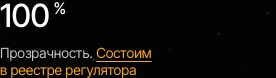
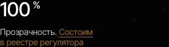
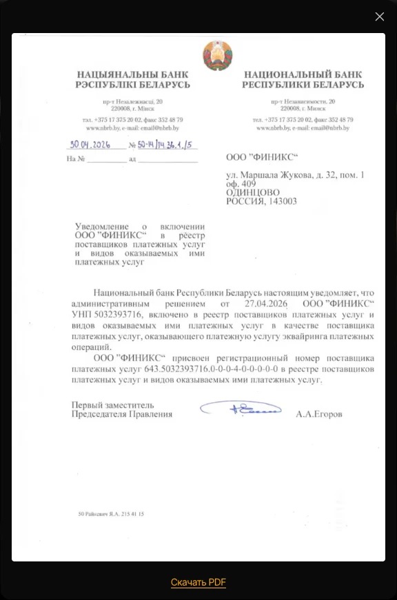

1. Как это выглядит
Фраза подчёркнута цветом кнопки в шапке. В покое и при наведении курсором цвет чуть меняется — так понятно, что по фразе можно нажать.


По нажатию страница никуда не переходит — открывается окно с картинкой документа. Лист виден целиком, скачивать ничего не нужно.

2. Куда загрузить документ
Раздел «Реквизиты компании» в админке, блок «Уведомление о включении в реестр». Там одно поле — картинка документа.
| Поле | Что туда идёт |
|---|---|
| Изображение листа | Картинка самого документа — именно её видно в окне на сайте. Подходят JPEG, PNG, WebP. Без картинки ссылки на сайте не будет вовсе — фраза останется обычным текстом, без подчёркивания и без нажатия. |
Обновить документ — значит загрузить новую картинку в это поле и нажать «Сохранить». Правка видна на сайте сразу.
Если на руках только PDF, сохраните его страницу картинкой: на Mac — открыть в «Просмотре» и «Экспортировать» в PNG или JPEG. Сам PDF в это поле не загрузится — админка примет только картинку.
3. Как поменять текст ссылки
Сама фраза — не часть документа, а обычное поле на странице «Главная». Она устроена одинаково в обоих местах: «Страницы» → «Главная» → «Редактировать», дальше нужная секция.
| Где | Как найти поле |
|---|---|
| «Состоим в реестре регулятора» | Секция «01 · Первый экран» → блок «Показатели» → карточка со значением «100 %». Поле «Текст ссылки на уведомление» стоит сразу под полем «Подпись». |
| «Состоим в реестре поставщиков платёжных услуг» | Секция «Безопасность и комплаенс» → блок «Пункты» → карточка «Легальная деятельность». То же поле «Текст ссылки на уведомление» — под полем «Описание». |
Вписали новый текст и нажали «Сохранить» — ссылка сразу стала новой фразой. Стёрли поле целиком — фраза пропадает, а текст рядом с ней остаётся: у первого экрана «Прозрачность.» никуда не денется, просто без ссылки после неё. Вписали текст обратно — ссылка вернулась.
Частые вопросы
-
Почему в окне картинка, а не сам PDF?
На iPhone встроенный просмотр PDF работает нестабильно: иногда не открывается вовсе, иногда вместо показа начинается скачивание. Картинка показывается всегда одинаково на любом устройстве, а лист на ней виден целиком — отдельно скачивать документ не нужно.
-
Один документ на обе фразы или два разных?
Один. Обе фразы на странице открывают одно и то же окно с одним и тем же документом из «Реквизитов компании».